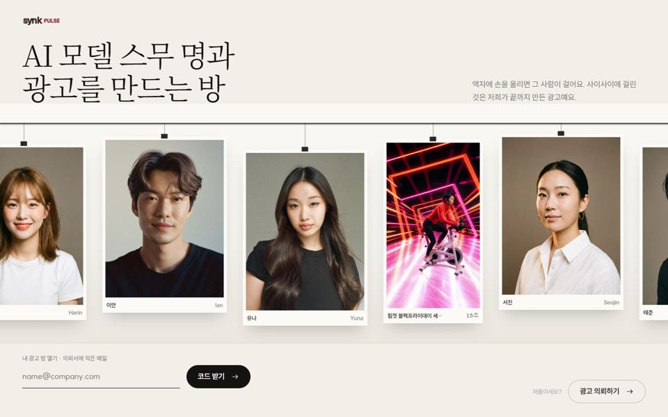
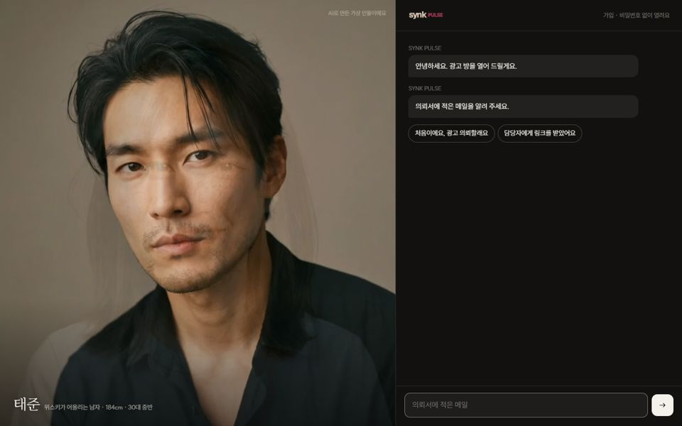

PULSE 고객 앱 다시 짓기
세 시안 모두 입장, 들어가는 순간, 내 방(모델 고르기 · 장면 이미지 확인), 새 의뢰까지 눌러서 넘어가요. 선택은 아이콘으로 접혀 있고, 고르는 자리마다 「추천대로」 단추가 있어요.
A 캐스팅 복도
모델과 광고가 세로 띠로 늘어선 복도. 띠 하나가 모든 화면의 문법이에요.

C 스튜디오 레일밝은 작업실 벽의 레일에 액자가 걸려 지나가요. 고른 것만 앞으로 나와요.

D 먼저 말 거는 방로그인부터 결정까지 담당자와의 대화 안에서 끝나요.
메일 칸에 아무 주소, 코드 칸에 숫자 여섯 자리를 넣으면 다음으로 넘어가요. 화면 위 가운데 작은 띠에 손을 올리면 화면을 바로 고를 수 있어요.